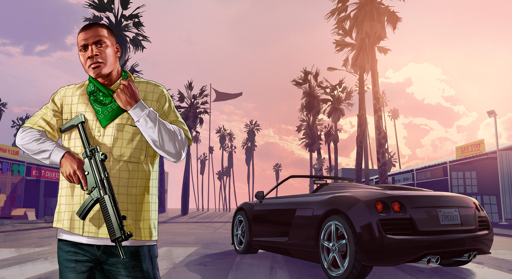
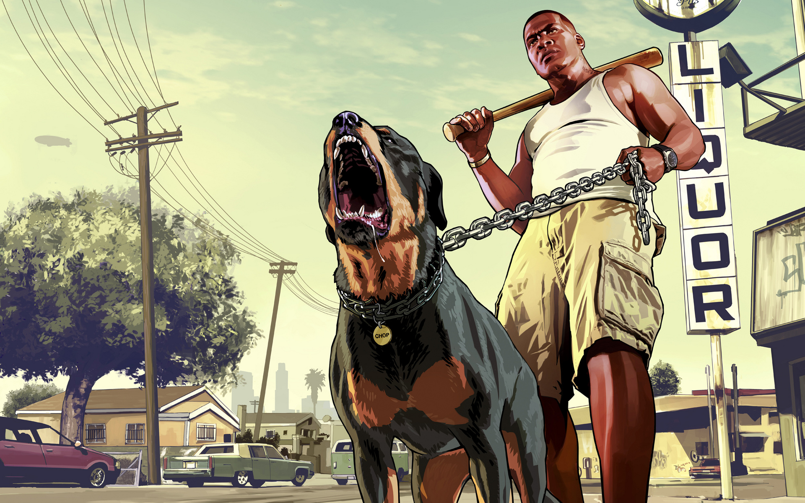

Franklin(){
Games
Por: Raphael Cardoso Fernandes

Franklin é um jovem que mora no subúrbio de Los Santos, seu maior desejo é ascender na vida do crime. Você o conhecerá como um agente de reintegração de posse que trabalha juntamente com seu melhor amigo Lamar Davis (também gangster) para Simeon Yeterian, dono de uma concessionária de carros luxuosos. A história começa a ficar interessante quando Franklin deve recuperar o carro comprado por Jimmy De Santa (filho de Michael), os dois protagonistas se conhecem de maneira inusitada, Michael levanta do banco traseiro do carro e leva uma arma à cabeça de Franklin, ordenando que este invada com carro e tudo a loja de Simeon, isto faz com que o gangster seja demitido e o faça se interessar pela maneira a qual Michael faz as coisas. Com o tempo, eles criam uma relação de pai e filho, trabalhando juntos em várias missões, assaltos e roubos.
Habilidade especial: Franklin é um ótimo motorista, ou seja, sua maior habilidade é com veículos logicamente. Ela permite que o tempo seja desacelerado (desde que esteja em um veículo), possibilitando ao jogador fazer curvas fechadas, ultrapassagens perigosas, evitar colisões em alta velocidade.

Chopp: É um cachorro da raça Rottweiler que pertencia a Lamar, porém o amigo o doa a Franklin. Achei extremamente interessante a Rockstar adicionar um cachorro à série, e principalmente, poder usá-lo em algumas missões, brincar, passear e se divertir com o animal. Assim como os personagens e carros, você pode customizar Chopp, alimentá-lo e treiná-lo usando o aplicativo para Smartphones e Tablets o iFruit.

Se você usa legendas no jogo, ficará impressionado com o quão próximo a legenda ficou da realidade, as conversas entre Franklin e outros personagens são carregadas de gírias, palavrões e sotaques. Com ele é possível apostar corridas terrestres de carro ou moto, assassinar grandes empresários à mando de Lester, comprar lojas de drogas e de automóveis ou se envolver em brigas de gangue. Gosta de lembrar do famoso C.J, viver uma vida de gangster e apostar corrida de carros? Então seu personagem favorito com certeza será o Franklin.
Referências:
}